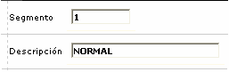
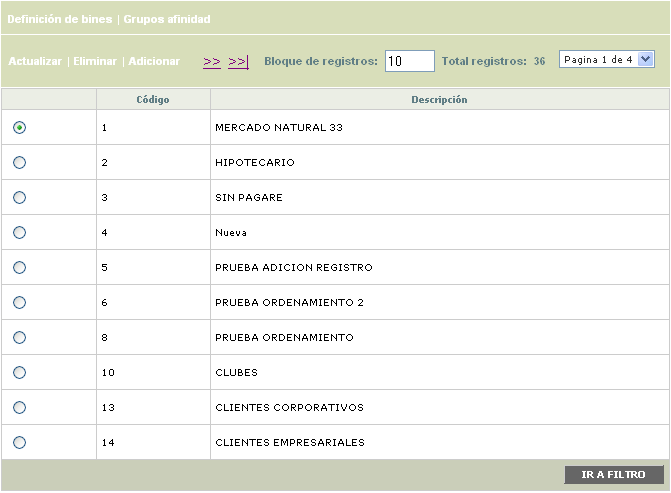
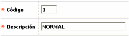
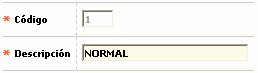

Segmentos
Mediante esta opción se parametrizan los diferentes segmentos o nichos de mercado que van a ser asociados a los bines y que conjuntamente con el grupo de afinidad van a conformar cada uno de los productos débito de la entidad.
Al ingresar a la opción se despliega un filtro que le permite al actor consultar algún registro específico por el código del segmento o la descripción del mismo. Por defecto, al ingresar al formulario se muestran todos los segmentos parametrizados actualmente por la entidad.


El formulario posee los hipervínculos Definición de bines y Grupos de Afinidad que le permiten a la entidad parametrizar los demás componentes del producto. Adicionalmente contiene las opciones Actualizar, Eliminar y Adicionar.
Adicionar: si el usuario invoca la opción Adicionar, se despliega un nuevo formulario con los siguientes campos.

Descripción de campos
|
Código |
Campo numérico de hasta 3 dígitos, obligatorio, en el que se ingresa el código de cada uno de los segmentos a parametrizar. |
|
Descripción |
Este campo alfanumérico de hasta 30 posiciones, obligatorio, se registra la descripción asociada con el segmento a adicionar. |
Actualizar: si el usuario selecciona un registro e invoca la opción Actualizar, se despliega un formulario en el cual el único campo modificable es la Descripción.
